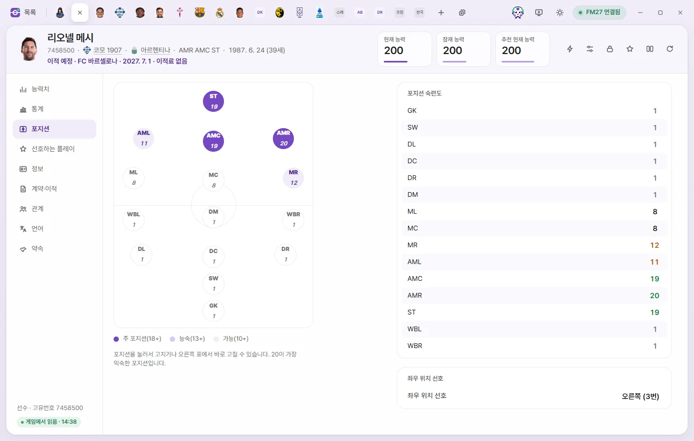
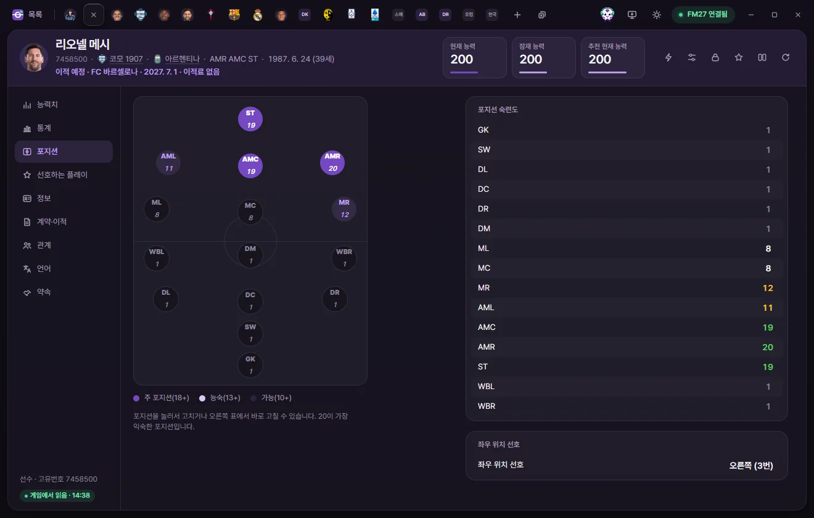
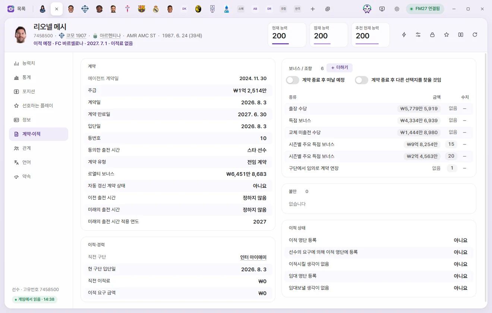
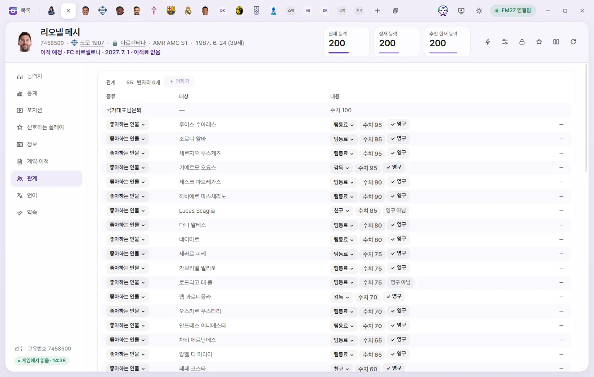
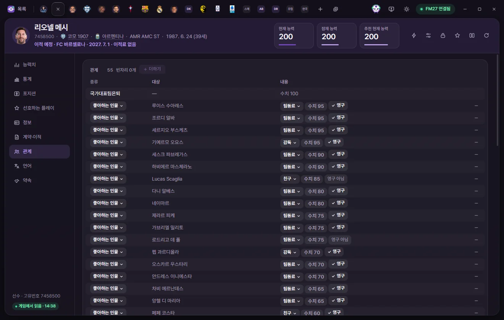

편집 탭
선수
선수 탭에서 능력치, 포지션, 선호하는 플레이, 계약, 관계, 언어까지 고치는 방법입니다. 편집 탭에서 값을 고치고 저장하는 공통 방법도 이 페이지에 있습니다.

탭 여는 법
선수 목록에서 이름을 누르면 그 선수의 탭이 열립니다. 빠른 열기(Ctrl+K), 다른 탭에 밑줄로 보이는 선수 이름, 구단 탭의 선수단 표에서도 열 수 있습니다. 탭을 다루는 방법은 탭과 빠른 열기에 있습니다.
탭을 열면 게임에서 그 선수의 값을 한 번 읽어 옵니다. 읽는 동안에는 '게임에서 읽는 중'이 보입니다. 읽지 못하면 '값을 읽지 못했습니다'와 '다시 읽기' 단추가 나옵니다.
탭 머리
모든 편집 탭의 머리는 같은 모양입니다. 종류마다 숫자 카드와 이름 아래 줄의 내용만 다릅니다.
이름과 그 아래 줄
- 고유번호: 이름 아래 첫 칸입니다. 누르면 번호를 복사합니다. 게임이 만든 사람(뉴젠)은
r-번호로 보입니다(그래픽 팩이 쓰는 모양). - 선수는 소속 구단, 국적, 주 포지션이 이어집니다. 밑줄이 있는 이름을 누르면 그 구단이나 국가의 탭이 열립니다.
- 임대 중인 선수는 '임대 · 계약 구단'이 따로 보입니다.
- 생년월일과 나이(게임 속 날짜 기준)가 보입니다.
- 다른 날짜에 이적이 합의된 선수는 '이적 예정 · 구단 · 날짜 · 이적료'가, 은퇴 날짜가 정해진 선수는 '은퇴 예정 · 날짜'가 보입니다.
주 포지션은 FMAX가 포지션 숙련도에서 고릅니다. 가장 높은 값에서 2 안쪽인 포지션을 3개까지 보여 줍니다.
숫자 카드
선수는 현재 능력(CA), 잠재 능력(PA), 추천 현재 능력(RCA) 세 카드가 있습니다.
- 현재 능력과 잠재 능력 카드는 눌러서 바로 숫자를 칠 수 있습니다. Enter나 다른 곳을 누르면 그 값이 남고, Esc는 원래 값으로 돌립니다. 다른 값처럼 저장을 눌러야 게임에 들어갑니다.
- 추천 현재 능력은 FMAX가 능력치와 포지션으로 계산한 값입니다. 고칠 수 없습니다. 현재 능력과 다르면 카드에 CA를 이 값으로 단추가 생깁니다. 누르면 현재 능력을 이 값으로 바꿔 둡니다(저장 필요).
- 설정에서 '선수 화면에 능력치 효율 보이기 (실험)'를 켜면 능력치 효율 카드가 더 생깁니다. 마우스를 올리면 포지션별 값이 보입니다. 보기만 하는 값입니다.
- 설정의 'CA·PA 숨기기'를 켜면 이 카드들이 점(••)으로 가려집니다.
머리 오른쪽 단추
| 단추 | 하는 일 |
|---|---|
| ⚡ 게임 에디터 기능 | 이적·임대, 부상·출장 정지·불만, 홈그로운, 국적, 대표팀·병역, 은퇴 날짜 등의 메뉴를 엽니다. 고른 기능은 확인한 뒤 게임에 바로 들어갑니다. 항목 설명은 게임 에디터 (⚡)에 있습니다 |
| 프리셋 | 고른 프리셋의 값을 이 탭에 채웁니다. 채운 값은 저장을 눌러야 들어갑니다. 메뉴 아래의 '지금 값으로 프리셋 만들기', '프리셋 관리'도 있습니다. 프리셋 |
| 고정 | 고정 화면에서 '고정 버튼으로 고정할 값'으로 고른 값들을 지금 게임 값으로 고정합니다. 다시 누르면 풉니다. 고를 값이 없으면 고정 화면으로 가는 안내가 뜹니다. 고정 |
| 즐겨찾기 (별) | 즐겨찾기에 넣거나 뺍니다. 넣으면 목록 화면 왼쪽의 즐겨찾기에서 바로 열 수 있습니다 |
| 비교 | 같은 종류의 다른 탭과 값을 나란히 봅니다. 비교 |
| 게임에서 다시 읽기 | 이 선수의 값을 게임에서 새로 읽습니다. 아직 저장하지 않은 값은 남겨 두고, 게임 값이 이미 그 값이면 지웁니다 |
왼쪽 목록
왼쪽에는 하위 페이지가 있습니다. 누르거나 ↑ ↓로 옮깁니다. 맨 아래에는 '선수 · 고유번호'와 읽은 상태가 있습니다.
- 게임에서 읽음 · 시각: 그 시각에 게임에서 읽은 값입니다.
- 마지막으로 읽은 값: 게임과 연결이 끊겼거나 세이브를 다시 불러와서, 화면 값이 지금 게임과 다를 수 있습니다. 이때는 값을 고칠 수 없습니다. 다시 읽기를 눌러 주세요.
값 고치기
모든 편집 탭에서 값은 같은 방법으로 고칩니다.

- 한 줄이 한 칸입니다. 글자가 흐린 줄은 보기만 하는 칸입니다.
- 줄을 누르면(또는 Enter) 고치는 칸이 열립니다.
- 숫자: − / + 단추, 숫자 입력, ↑ ↓, 마우스 휠로 바꿉니다. Shift를 누른 채 −/+를 누르면 능력치처럼 1씩 바뀌는 칸은 5씩, 큰 숫자는 10배씩 바뀝니다. 금액은 고른 통화의 딱 떨어지는 단위로 움직입니다.
- 날짜는 달력, 선택지가 있는 칸은 목록, 색은 색 고르기 창이 열립니다.
- 예/아니요 칸은 숫자 칸으로 열립니다. 1이 예, 0이 아니요입니다.
- Enter나 다른 곳을 누르면 값이 남고, Esc는 연 때의 값으로 돌립니다. Tab은 다음 줄을 엽니다.
- 바꾼 줄은 색이 바뀌고, 원래 값이 작게 함께 보입니다. 원래 값으로 다시 맞추면 바꾼 것이 없어집니다.
- 줄 이름 옆의 ⓘ에 마우스를 올리면 그 칸의 설명이 나옵니다.
- 줄마다 있는 자물쇠는 그 값 하나를 고정합니다. 누르는 즉시 지금 게임 값으로 고정됩니다. 고정
- 금액은 설정에서 고른 통화로 보이고 그 통화로 입력합니다. 급여(주급 칸)는 설정의 '급여 표시'에 따라 주급·월급·연봉으로 보입니다.
- 능력치는 게임 안에서 화면보다 잘게 기억됩니다. 그래서 고치는 칸 옆에 '내부 숫자'가 함께 보입니다. 화면 값을 원래대로 돌리면 원래의 잘게 기억된 값이 그대로 남습니다.
- 설정의 '정상 범위보다 높게 쓰기 (실험)'를 켜면 능력치는 25까지, 성격은 127까지 쓸 수 있습니다. 보통 범위를 넘은 값은 표시가 붙습니다.
목록으로 된 칸(언어, 관계, 계약 조항 등)에서는 밑줄 점선이 있는 숫자를 눌러 그 자리에서 고칩니다. 목록 머리의 + 더하기, 줄 끝의 −(빼기)도 저장을 눌러야 들어갑니다. 빼기로 표시한 줄을 다시 누르면 취소됩니다.
저장과 되돌리기
값을 바꾸면 아래쪽에 막대가 나옵니다. '바꾼 값 N개'와 앞의 두 개가 '칸 원래 값→새 값'으로 보입니다.
- 저장: 이 탭에서 바꾼 값만 게임에 씁니다. 쓰기 전에 게임이 아직 읽은 때의 값을 갖고 있는지 확인하고, 쓴 뒤 다시 읽어서 같은지 확인합니다. 들어간 값은 한 번 초록색으로 빛납니다.
- 되돌리기: 이 탭에서 바꾼 값을 모두 버리고 게임 값으로 돌립니다.
- 여러 탭에서 바꾼 값은 위쪽의 저장(Ctrl+S)으로 한 번에 씁니다.
- 그사이 게임에서 값이 바뀌었으면 쓰지 않고 다시 읽습니다. 바꾸려던 값은 남겨 둡니다.
- 게임에 연결되어 있지 않거나, 지금 게임이 아닌 때 읽은 값이면 저장 단추가 '연결되면 적용'으로 바뀌고 눌리지 않습니다.
- 저장하지 않은 채 탭을 닫으면 그 값은 버려집니다. 바로 뜨는 '다시 열기'를 누르면 값과 함께 되살아납니다.
- 이름, 국적, 언어, 부상 한 건, 홈그로운, 대회 등록, 계약 조항, 출장 정지처럼 게임에 기록을 더하거나 빼는 일은 게임 안의 기능을 불러서 합니다. 처음 한 번 세이브를 백업했는지 묻습니다. 날짜가 진행 중이 아닌, 게임이 멈춘 화면에서 저장해 주세요.
언제 게임과 세이브에 남는지는 값이 게임에 들어가는 때에 정리되어 있습니다.
능력치
기술·정신·신체·세트피스 능력치와, 아래쪽에 숨은 능력치·주발·성격·평판·몸 상태·부상이 한 페이지에 있습니다. 묶음 제목 옆의 숫자는 그 묶음의 평균입니다. 능력치는 가나다순입니다.
오른쪽 위의 골키퍼 능력치 보기를 켜면 기술 묶음 자리에 골키퍼 묶음(퍼스트 터치, 패스 포함)이 나옵니다. GK 숙련도가 15 이상인 선수는 처음부터 켜져 있습니다.
| 묶음 | 칸 | 범위 |
|---|---|---|
| 기술 | 개인기, 골 결정력, 드리블, 일대일 마크, 중거리 슛, 크로스, 태클, 패스, 퍼스트 터치, 헤더 | 1~20 |
| 정신 | 대담성, 리더십, 수비 위치 선정, 승부욕, 시야, 예측력, 오프 더 볼, 적극성, 집중력, 천재성, 침착성, 팀워크, 판단력, 활동량 | 1~20 |
| 신체 | 가속도, 균형 감각, 몸싸움, 민첩성, 점프 거리, 주력, 지구력, 타고난 체력 | 1~20 |
| 세트피스 | 장거리 스로인, 코너킥, 페널티킥, 프리킥 | 1~20 |
| 골키퍼 | 공 던지기, 공중 장악력, 골킥, 기행, 돌진(빈도), 반사 신경, 볼 핸들링, 수비 조율, 일대일 방어, 페널티 박스 장악력, 펀칭(빈도) | 1~20 |
| 숨은 능력치 | 꾸준함, 다재다능, 더티 플레이, 부상 빈도, 중요 경기 | 1~20 |
| 주발 | 왼발, 오른발 | 1~20 |
| 성격 | 논쟁성, 스포츠맨십, 압박감 대처, 의리, 적응력, 참을성, 포부, 프로 의식 | 1~20 |
| 평판 | 현재 평판, 국내 평판, 세계 평판 | 0~10000 |
몸 상태·사기
| 칸 | 하는 일 | 범위 |
|---|---|---|
| 컨디션 | 체력 상태 | 50~100% |
| 경기 감각 | 경기 감각 | 30~100% |
| 피로도 | 높을수록 더 지친 상태 | −500~1000 |
| 사기 | 선수 사기 | 1~20 |
| 만족도 | 계약에 들어 있는 만족도. 읽어 본 값은 −40~86이었고, 게임이 허용하는 범위는 확인하지 않았습니다 | −100~100 |
| 출전 시간 만족도 | 읽어 본 세이브에서는 모두 20이었습니다(시즌 초라서로 보임) | −100~100 |
부상·출장 정지
- 현재 부상: 부상, 부상일, 결장 일수(최대·최소)가 보입니다. 머리의 부상 회복은 목록을 모두 비웁니다. 줄 끝의 회복은 그 부상 하나만 게임이 낫게 합니다. 둘 다 저장을 눌러야 들어가고, 다시 누르면 취소됩니다.
- 출장 정지: 종류, 범위, 시작일, 길이(남은 경기 수나 일 수)가 보입니다.
- 출장 정지 해제: 목록을 모두 비웁니다.
- + 더하기: 종류를 고르면 창이 열립니다. 종류에 따라 범위(대회, 국가, 대륙, 대표팀 종류)를 고르고, 시작일(오늘부터 2년 앞뒤 안)과 경기 수(1~127)나 일 수(1~730) 중 하나를 정합니다.
- 연필 단추는 한 건의 모든 칸을 고칩니다. −는 그 건을 뺍니다.
통계
이번 시즌 기록과 다른 선수와의 비교를 보는 페이지입니다. 보기만 하고 고치는 값은 없습니다. 위쪽에서 시즌 상세, 리그 순위, 개요를 고르고, 대회·비교 리그·포지션·최소 출전으로 비교 범위를 정합니다. 개요의 선수 카드(사진, PNG로 저장)도 여기에 있습니다. 자세한 쓰임은 통계·선수 카드·기록실에 있습니다.
포지션



경기장 그림에 15개 포지션이 숫자와 함께 있습니다. 색은 주 포지션(18 이상), 능숙(13 이상), 가능(10 이상)입니다. 동그라미를 누르거나 오른쪽 표에서 고칩니다. 20이 가장 익숙한 포지션입니다.
| 칸 | 하는 일 | 범위 |
|---|---|---|
| GK, SW, DL, DC, DR, WBL, WBR, DM, ML, MC, MR, AML, AMC, AMR, ST | 포지션 숙련도 | 1~20 |
| 좌우 위치 선호 | 같은 포지션에 여러 명이 설 때 어느 쪽에 서고 싶어 하는지. 없음, 오른쪽, 왼쪽, 가운데와 '오른쪽 (3번)' 같은 값이 있습니다. 3·4·6·7번은 오른쪽인지 왼쪽인지까지만 확인했습니다 | 선택지 |
선호하는 플레이

선호하는 플레이 62개가 가나다순 스위치로 있습니다. 위쪽에 지금 켜진 것과 그 수가 보입니다. 누를 때마다 켜고 끄며, 저장을 눌러야 게임에 들어갑니다. '정상에 서면 은퇴할 것이다', '가능한 한 선수 생활을 오래 할 것이다'도 여기에 있습니다.
정보

기본 정보
| 칸 | 하는 일 | 고칠 수 있는 범위 |
|---|---|---|
| 고유번호, 생성선수, 취업 비자 있음 | 고유번호, 게임이 만든 선수인지, 취업 허가가 있는지 | 보기만 |
| 이름, 성, 통칭 | 눌러서 글자를 고칩니다. 이름과 성은 비울 수 없고, 통칭은 비울 수 있습니다 | 60자까지 |
| 국적 | 연필 단추로 나라를 고릅니다. 저장을 누르면 게임 자체 기능으로 주 국적을 바꿉니다. 다른 국적과 국가대표 기록은 그대로입니다 | 나라 목록 |
| 소속, 계약 구단 | 지금 뛰는 구단과 계약된 구단. 누르면 구단 탭이 열립니다 | 보기만 |
| 출생 도시 | 연필 단추로 도시를 고릅니다. 저장을 누르면 게임 자체 기능으로 바꿉니다 | 도시 목록 |
| 성별 | 남성·여성. 여성으로 바꾸면 '남자팀 자격' 줄이 생깁니다. 자세한 것은 성별 바꾸기 | 남성, 여성 |
| 은퇴 예정 | 이번 시즌이 끝나면 은퇴합니다. 끄면 은퇴를 미루는지는 게임에서 아직 확인하지 않았습니다 | 예, 아니요 |
| 현재 구단에서 활동 후 은퇴 | 지금 구단을 떠날 때 은퇴합니다 | 예, 아니요 |
| 생년월일 | 바꾸면 나이도 바뀝니다 | 날짜 |
| 키 | cm | 140~215 |
국적과 홈그로운 목록
- 다른 국적: + 더하기로 나라를 골라 더하고, −로 뺍니다. 이미 있는 나라와 주 국적은 고를 수 없습니다.
- 구단에서 훈련 (홈그로운), 국가에서 훈련 (홈그로운): 게임 에디터의 '구단에서 훈련', '국가에서 훈련'과 같습니다. + 더하기에서 규칙(예: 15~21세에 3년)을 고른 뒤 구단이나 나라를 고릅니다. 규칙 칸을 누르면 규칙을 바꾸고, −로 뺍니다. 규칙 8·12처럼 게임 에디터에서 고를 수 없는 규칙은 게임이 직접 만든 기록에만 있습니다.
- 대회 등록: 선수가 어느 팀의 어떤 대회에 등록돼 있는지(팀, 팀 종류, 등록 종류)입니다. + 더하기에서 지금 팀이나 계약 팀을 고르고 등록 종류를 고릅니다. −로 뺍니다. 국가대표팀 등록은 보여 주기만 합니다. 알려진 설명으로는 국내 경기 등록이 대륙 대회까지 덮지는 않습니다.
외모
| 칸 | 하는 일 | 고칠 수 있는 범위 |
|---|---|---|
| 언어 번호 | 255는 없음 | 보기만 |
| 인종 | 북유럽인, 지중해/히스패닉인, 아시아, 동아시아 등 11가지 | 선택지 |
| 머리색 | 금발, 밝은 갈색, 진한 갈색, 빨간색, 검은색, 회색(각 1~3)과 모름 | 선택지 |
| 머리 길이 | 아주 짧은 머리, 짧은 머리, 중간 길이, 긴 머리, 대머리 | 선택지 |
| 피부색 | 다른 편집 도구에서는 1 큰 숫자로 보일 수 있습니다 | 0~20 |
| 체형 | 외배엽, 외중배엽, 중배엽, 중외배엽, 내배엽 | 선택지 |
외모 아래의 경기 외형 칸(머리 스타일, 소매, 셔츠 착용, 축구화 등)은 외형에서 설명합니다.
대표팀
| 칸 | 하는 일 | 고칠 수 있는 범위 |
|---|---|---|
| A매치 출전, A매치 득점 | 성인 대표팀 기록 | 0~999 |
| U21 대표 출전, U21 대표 득점 | 21세 이하 대표팀 기록 | 0~255 |
| 국적 정보 | 대표 국적 기준의 국적 정보(국적 선택, 국가에서 출생, 국가대표 차출 불가 등). 대부분은 '정보 없음'입니다 | 선택지 |
| 이탈리아에서 비EU 선수로 취급 | 게임 에디터의 같은 이름 칸과 같습니다. '아니오'로 바꾸면 두 표시를 함께 지워서 이탈리아에서 EU 선수로 인식됩니다. 이적이나 명단 재분류 때 게임이 다시 정할 수 있습니다 | 선택지 |
| A매치 데뷔일, A매치 첫 골 | 날짜 | 날짜 |
| 대표팀 은퇴일 | 대표팀에서 은퇴한 날. 오늘보다 뒤의 날짜는 그날 은퇴할 예정이라는 뜻입니다. FMAX는 아직 '국가대표팀은퇴' 기록 자체를 더하거나 빼지 못합니다(⚡ 메뉴에 있습니다) | 날짜 |
능력
현재 능력, 잠재 능력(각 1~200)입니다. 머리의 카드와 같은 값입니다.
계약·이적


계약
| 칸 | 하는 일 | 고칠 수 있는 범위 |
|---|---|---|
| 주급 | 설정에 따라 월급·연봉으로 보입니다 | 0~1억 파운드 |
| 계약일, 계약 만료일, 입단일 | 계약 날짜 | 날짜 |
| 등번호 | 255는 없음 | 1~99 |
| 동의한 출전 시간 | 계약에서 동의한 구단 내 위상(스타 선수, 주전 선수, 유망주 등). 계약 안에 같은 값이 한 곳 더 있지만 FMAX는 이 칸만 바꿉니다 | 선택지 |
| 계약 유형 | 시간제, 전임, 아마추어, 유소년, 무계약 | 선택지 |
| 로열티 보너스 | 주급과 같은 단위 | 0~1억 파운드 |
| 자동 갱신 계약 상태 | 계약이 자동으로 갱신되는지. 읽어 본 세이브에서는 켜진 선수가 없었습니다 | 예, 아니요 |
| 이전 출전 시간 | 이전 위상 | 선택지 |
| 미래의 출전 시간, 미래의 출전 시간 적용 연도 | 그 해부터 바뀔 위상. 대부분 유망주에게 있습니다. 연도 1900은 없음 | 선택지, 1900~2200 |
| 에이전트 계약일 | 에이전트와 계약한 날 | 보기만 |
보너스 / 조항 목록은 종류, 금액, 수치가 보입니다. 아래의 두 스위치와 + 더하기는 계약이 있는 선수에게만 있습니다.
- 금액과 수치를 눌러 고칩니다. 금액은 주급과 같은 단위, 수치는 비율(%)이나 경기 수입니다.
- 방출 허용 최소 이적료 조항처럼 날짜로 끝나는 조항의 수치는 계약일부터의 일수입니다. 화면에는 '365일 (날짜까지)'처럼 보입니다.
- 머리 아래의 두 스위치 계약 종료 후 떠날 예정, 계약 종료 후 다른 선택지를 찾을 것임은 게임 에디터의 같은 스위치입니다.
- + 더하기: 조항 종류를 고르면 금액과 수치(날짜 조항은 '조항이 끝나는 날')를 정하는 창이 열립니다. 각각 끄면 그 값 없이 넣습니다. 같은 종류를 여러 개 넣을 수 있습니다.
- −로 조항을 뺍니다.
불만
선수의 불만 목록(이유, 단계, 시작한 날, 끝난 날)입니다. 최근 10건까지 남고, 끝난 불만도 기록으로 남습니다. 진행 중인 불만의 끝내기를 누르면 저장할 때 끝나는 날이 게임 속 오늘로 바뀝니다('불만 해소' 기능과 같은 방식). 다시 누르면 취소됩니다.
이적 상태
| 칸 | 범위 |
|---|---|
| 이적 명단 등록 | 예, 아니요 |
| 선수의 요구에 의해 이적 명단에 등록 | 예, 아니요 |
| 이적시킬 생각이 없음 | 예, 아니요 |
| 임대 명단 등록 | 예, 아니요 |
| 임대보낼 생각이 없음 | 예, 아니요 |
이적·경력
| 칸 | 하는 일 | 고칠 수 있는 범위 |
|---|---|---|
| 현 구단 입단일 | 지금 구단에 들어온 날 | 날짜 |
| 직전 구단 | 누르면 구단 탭이 열립니다 | 보기만 |
| 직전 이적료 | 없음은 −1 | 0~10억 파운드 |
| 이적 요구 금액 | 없음은 −1 | 0~10억 파운드 |
이적, 임대, 계약 해지는 ⚡ 메뉴에서 합니다. 게임 에디터 (⚡)
관계



다른 인물·구단·대회·국가와의 관계 기록이 종류, 대상, 내용으로 보입니다. 국가대표팀 은퇴, 라이벌, 좋아함·싫어함, 그 밖의 기록 순서입니다. 대상 이름을 누르면 그 탭이 열립니다.
좋아하는 인물, 싫어하는 인물, 좋아하는 구단, 싫어하는 구단은 고칠 수 있습니다.
- 종류 단추: 좋아함과 싫어함을 바꿉니다.
- 이유 단추: 좋아하는 이유를 고릅니다(인물은 친구·우상·팀동료 등, 구단은 서포터·선수 등).
- 수치: 눌러서 0~100을 칩니다. 높을수록 강합니다.
- 영구: 인물만 켜고 끕니다. 영구 관계는 시간이 지나도 사라지지 않습니다. 구단은 늘 영구입니다.
- −: 그 기록을 뺍니다.
- + 더하기: 종류를 고르고 선수·스태프나 구단 이름을 검색해 고릅니다. 새 기록은 수치 75, 영구로 시작합니다. 자기 자신과 이미 관계가 있는 대상은 고를 수 없습니다.
그 밖의 기록(국적, 대회 등록, 유소년 출신 구단, 출장 경기 등)은 보기만 합니다. '기타'는 이름이 알려지지 않은 기록입니다. '병역'은 이 기록이 있는 사람 대부분이 한국 선수라서 붙인 이름입니다.
언어
할 줄 아는 언어 목록(언어, 수준)입니다. 모국어는 국적으로 정해져서 이 목록에 없습니다. 수준은 0~10이고 클수록 잘합니다.
- 수준을 눌러 숫자를 바꿉니다.
- 구사 못 함: 게임 에디터의 '구사하지 못함'과 같습니다. 구사 못 함인 언어에는 구사하게 단추가 있어 수준을 다시 고릅니다.
- + 더하기: 수준(10~1)이나 구사 못 함을 고르고 언어를 고릅니다.
- −로 언어를 뺍니다.
약속
감독이 선수에게 한 약속과 그 결과(약속, 약속한 사람, 약속한 날, 기한, 결과)입니다. 게임은 같은 목록에 선호하는 플레이 훈련, 집중 어학 코스, 보너스 반응 기록도 적어 둡니다. 그런 줄은 앞에 (훈련)·(어학)·(기록)이 붙습니다. 끝난 훈련은 게임이 '어김'과 같은 값으로 적습니다.
보기만 합니다. 기한은 게임 전체 약속 목록의 순서에도 쓰여서, 고쳐도 괜찮은지 확인하지 못했습니다.